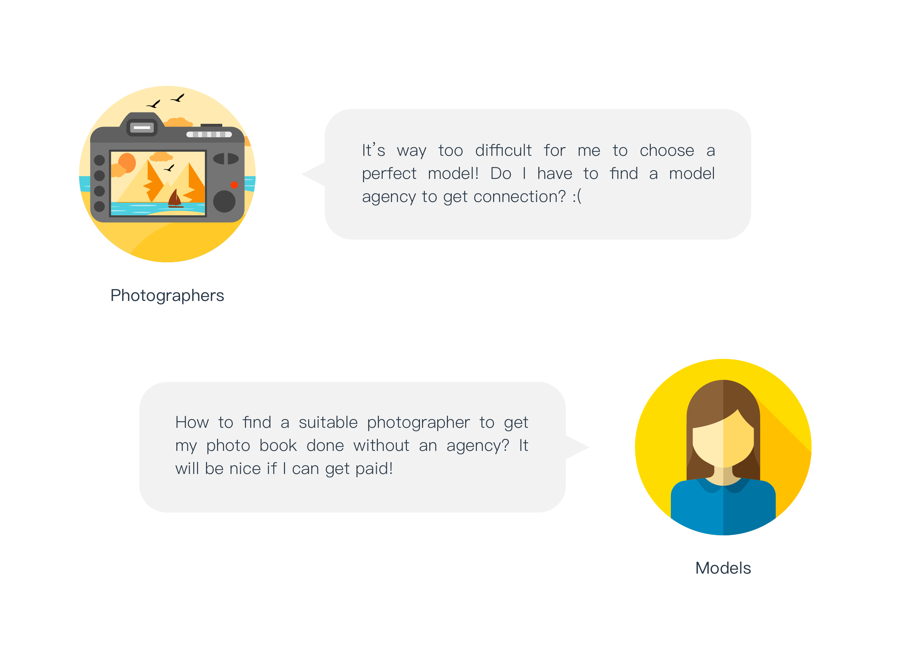
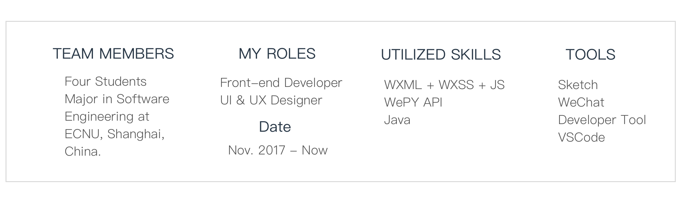
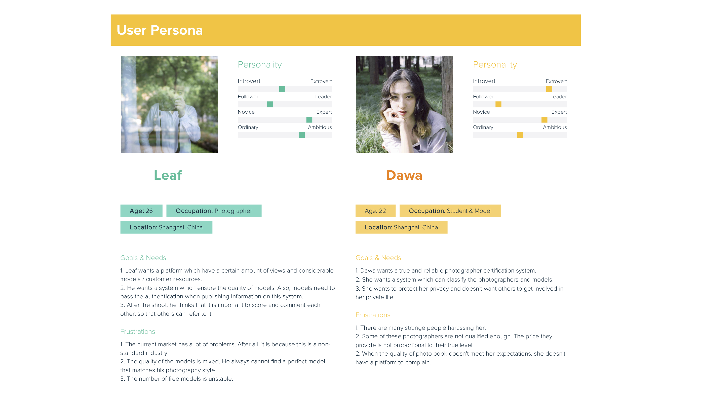
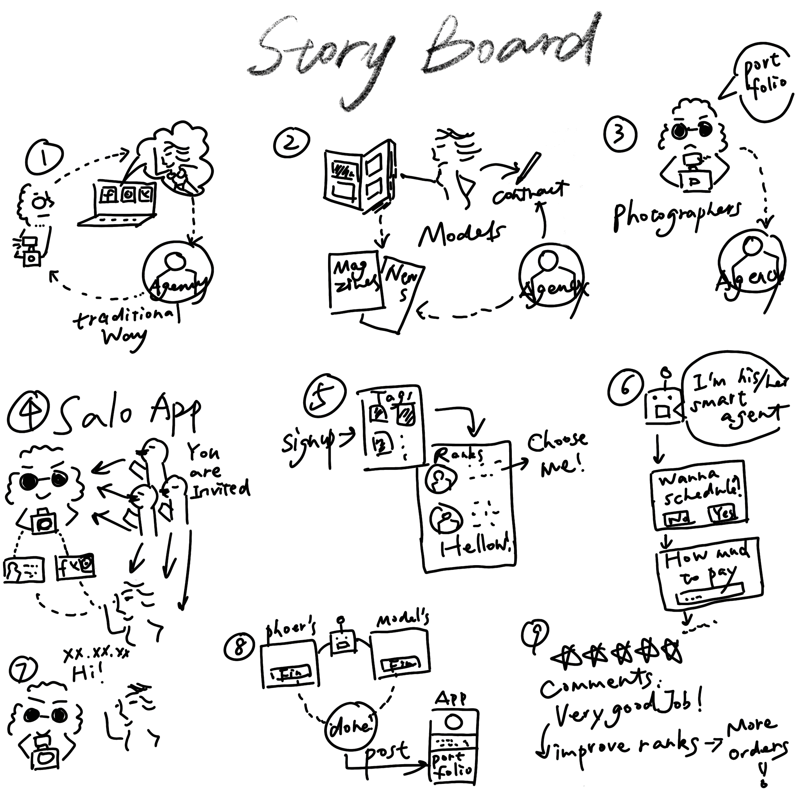
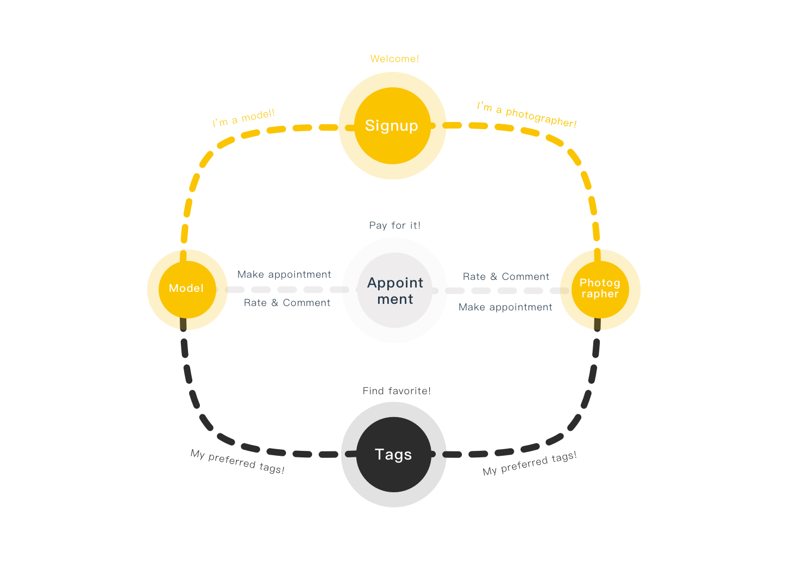
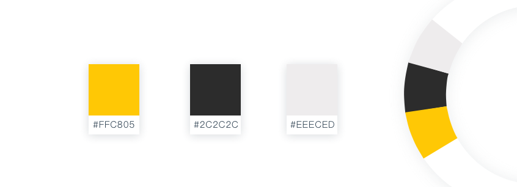

What do photographers and models really NEED ?
What is SALOTTO/沙龙 ?
It is a match system for qualified photographers and models. Since I am Nikon China's contract photographer right now and I have a plenty of photographers friends as well as models, they are actually suffered from the communication difficulty and resource problems—the quality and quantity of information. By using our platform, they can easily find the best match according to their preferred tags. Every photograher and model is carefully selected by peer review and the qualified people can obtain a unique key to sign up to our app. It assures the quality of our members and prevent some potential risks such as fraud and sexual assault which are the biggest problems among these two groups. Also, everyone can upload their portfolio in our app. By doing so, their recommended level will increase according to weights. Recommended level is an essential index in this match system. It will decide whether a photographer or model will be precisely found and eventually set up a deal. One can make appointment with the preferred photographer or model by looking up a suitable date on their schedules. The most important highlight of this app is the "Smart Agent" function which means that our members have indirect contact with strange person and have the right to decline or agree the appointment without being offensive and awkward. And "Smart Agent" will precisely set up a schedule by asking many questions like "How much will you pay for this shooting?", "Will I have to do the makeup by myself?" and so on. Then it will inform his master by text or email. Quite cute, right?
The roles I played and My team
Persona
From interviewing photograhpers and models, I built two personas below.
Ideate
I went further and draw storyboard to see how user would interact in the traditional way and in my approach.
After discussing with teammates, based on storyboard interaction, we think the Mobile app is the best way to meet requirements. Therefore, I decided to go on with WeChat mini-program ( one kind of Mobile app).
Product Decisions
The goal of this app is to help our members find the best match based on their perferrence. It should be easy to use and consice for looking up information.
Product Flow Diagram
Color Scheme
Yellow brings me energy and pleasure. So I chose yellow and black as the main scheme in order to give users a bright mood, attract and keep them.
